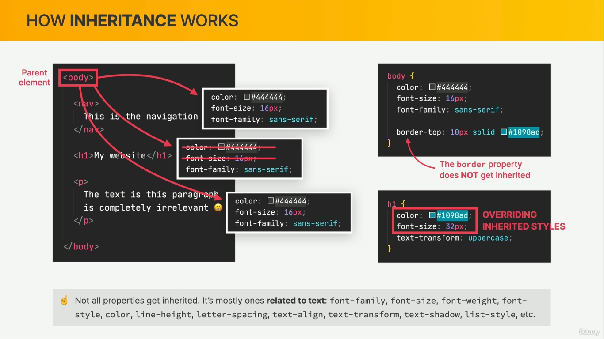

If same property needs to be applied to different selectors, use commas in between them.
h1, p, h3 {
property:value;
}
If a property needs to be applied only to a selector that is only inside another selector then use spaces between them.
header p {
property:value;
}
But don't try to replicate html structure in CSS beyond a point, use classes and ids of HTML elements instead.
.className {
property:value;
}
#elementId {
property:value;
}
SelectorA + SelectorB (Adjacent Sibling): Targets B only if it is the very next item after A.
SelectorA ~ SelectorB (General Sibling): Targets B if it comes anywhere after A, even if there are other tags sitting between them.
Colors


Psuedo Classes
selector:first-child { } is psuedo class for selecting first child elements of the selector
selector:last-child { } is psuedo class for selecting last child elements of the selector
selector:nth-child(n) { } is psuedo class for selecting nth child element of the selector, n is the number of the child. n is not zero index, it can be text too like odd or even
article p:first-child {} will not be applied to the first p that is inside the article or its child elements, it only works on the first child that is p, if first child is not p then it will not apply at all.
a:link{tex-decoration:none;} is psuedo class for selecting anchor elements that have href value. Also text-decoration none removes underline from link texts
a:visited{} is psuedo class for selecting anchor elements that are visited by user, default behavior changes its color, usually we override this behavior and set it same as rest of the links
a:hover{} is psuedo class for selecting anchor element that is hovered on, using mouse pointer
a:focus{} is psuedo class for selecting anchor element that is focused on, using keyboard buttons, mainly tab
a:aactive{} is psuedo class for selecting anchor element that is active, usually clicked on, sometimes when selected using tab and activated using Enter


body selector vs universal selector
When some properties are applied to body selector, all its child will inherit those properties, except ones that are not transferable, like border, margin, padding,... But universal selector, it selects every element, not through inheritance, its applied to all elements, which includes properties that are not transferred from parent to child.
Collapsing Margins: when we have two margins that occupy the same space, only one of them is actually visible on the page, the larger one.
HTML presentation attributes (like width and height on an tag) actually have the lowest priority when stacked against CSS. Any CSS rule—whether it is external, internal, or inline—will completely override them. They should still be used to present images in same aspect ratio while CSS file is still loading
Whenever one of the properties (height or width) is not defined anywhere for the image, other is calculated to maintain aspect ratio, but if its mentioned anywhere then you have use "auto" to get it to this behavior
To center a page on the viewport, you can just add a width to the container div, which contains whole page content, and use auto margin for margin-left and margin-right.
Button border is only overridden when border style is defined, just changing border color will not work or just use shorthand to update all three
When we want to center a group of inline or inline-block elements we use text-align:center on their parent element


Psuedo Elements
While Pseudo class targets an entire existing element during a specific state or condition, Pseudo Element targets a specific part or a sub-section of an element.
- selector::first-letter
- <p>"Hello!"</p> -- Matches BOTH the `"` and the `H`
- <p>#Hash</p> -- Matches the `#`
- "Text → Matches " and T
- <p>👋 Hello world!</p> -- ::first-letter successfully captures the whole emoji
- <p>👋🚀🔥</p> -- In several browser versions, ::first-letter will match nothing at all because no typographic text follows it
- selector::first-line --targets a structural layout block (the entire first rendered line of text)
- selector::after -- used to add content after a selector and style it, added content will be inline element by default
- selector::before -- used to add content before a selector and style it, added content will be inline element by default